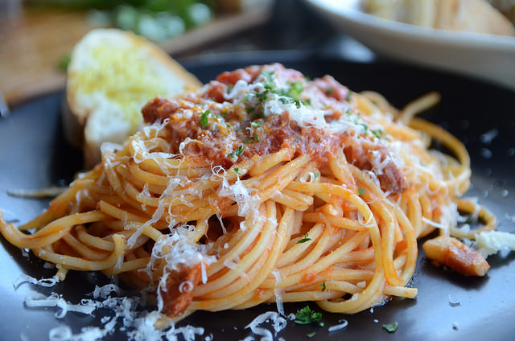
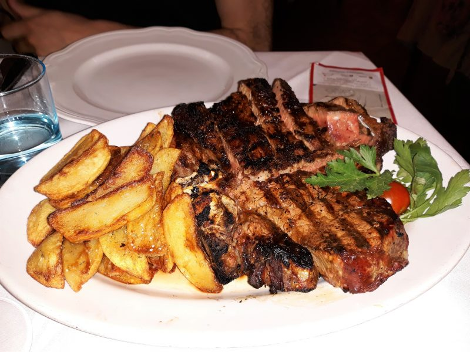
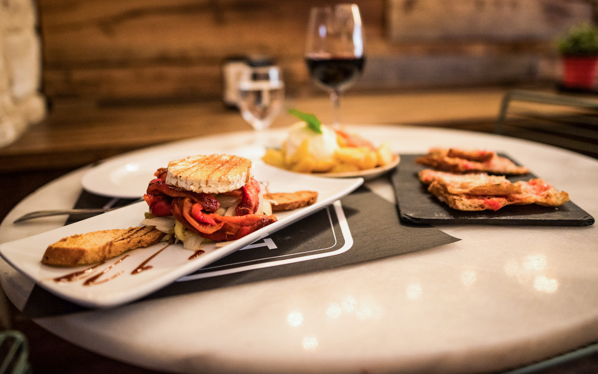
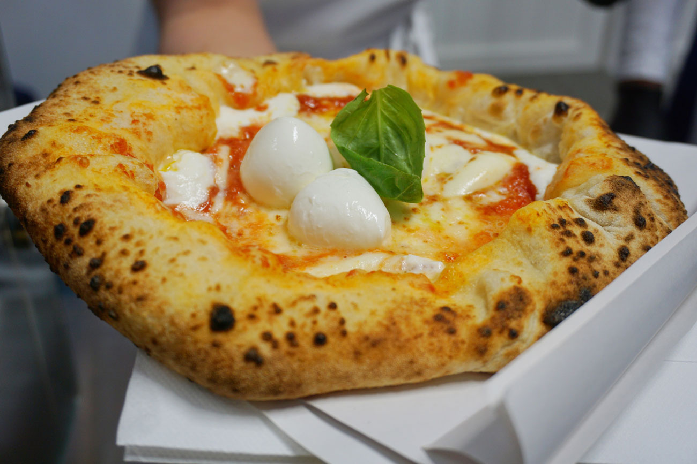
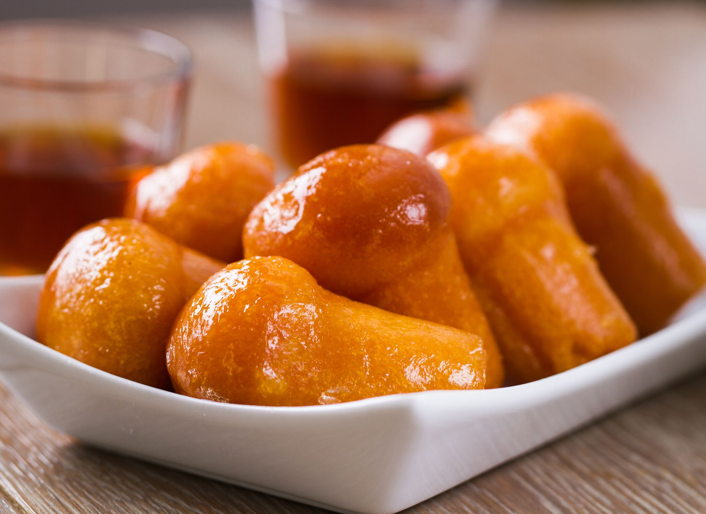

Pasta alla carbonara
Un piatto tipico romano, creato appositamente da persone che conoscono la vera e propria preparazione.

Costata di manzo e patate
Una squisitezza unica, carne davvero succulenta, morbida e piena di proteine. Accompagnata da un contorno di patate deliziose!

Caviale e vongole
Una specialità pugliese composta da linguine con caviale rosso e vongole.

Arrosto con verdure
Arrosto di vitello con verdure arrostite tra cui peperoni, zucchine.

Pizza napoletana
Questa pizza è speciale per il suo impasto a lunga lievitazione.

Babà al rum
Questo dolce molto buono e di origini francesi, con il suo retrogusto di rum fa innamorare chiunque lo assaggi.